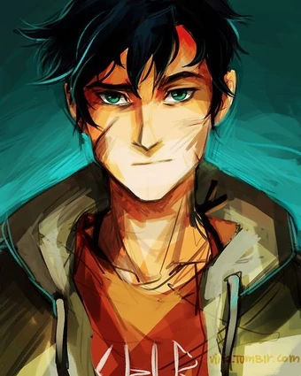
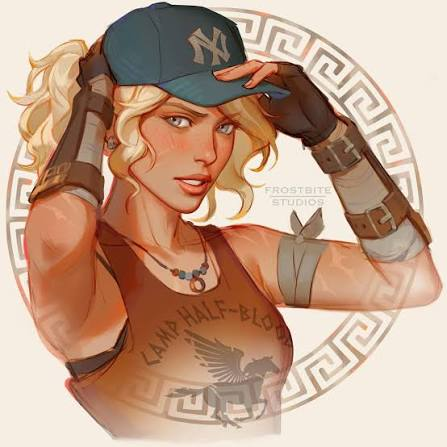
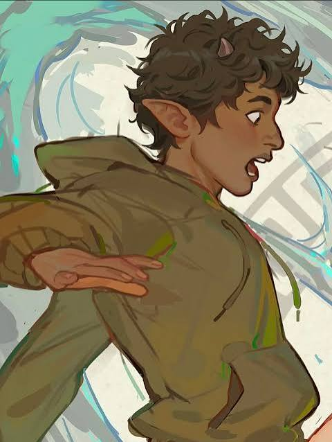
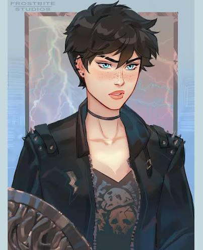
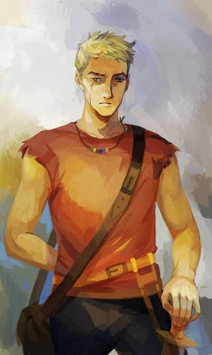

This series follows the adventures of Percy Jackson, who is the son of Poseidon, a Greek god. This page is a tribute to him.
The gods of Olympus never disappeared. They moved with the Western civilization, so right now Mount Olympus floats above the Empire State Building, the entrance to the Underworld is in Los Angeles, and the gods still have children with mortals. Those children are demigods (DUH), and monsters start hunting them the moment their powers begin to show. Percy is one of them, and the dyslexia and ADHD he struggles with at school turn out to be signs of a brain wired for ancient Greek and battle reflexes.
In the books, Percy tells everything himself (I LOVE THAT), and he is sarcastic, loyal and constantly in over his head, so even the scariest chapters have a joke somewhere in them.
Camp Half-Blood is a summer (sometimes winter) camp for demigods, where Percy and his friends attend. It's a place where they can learn to control their powers and protect themselves from monsters, under the guidance of their activities co-ordinator, Chiron, a centaur.


Percy is the main character of the series. He is a demigod, the son of Poseidon and Sally Jackson. He is brave, loyal, and has a strong sense of justice. Throughout the series, Percy goes on numerous quests to save the world from various threats.

Annabeth is a demigod, the daughter of Athena and Frederick Chase. She is intelligent, resourceful, and has a strong sense of loyalty to her friends. Annabeth is Percy's girlfriend, and she often accompanies him on his quests.

Grover is a satyr and Percy's best friend. He is deeply committed to nature and has strong feelings (LIKE REALLY STRONG), for enchiladas and tin cans.

Thalia is a demigod, the daughter of Zeus and Beryl Grace. She is brave, strong-willed, and has a rebellious streak. Thalia is a skilled fighter and often takes on leadership roles within the group.

Luke is a demigod, the son of Hermes and May Castellan. He is initially a friend and mentor to Percy, but later becomes an antagonist in the series. Luke is complex, with a troubled past and conflicting loyalties.
Percy is accused of stealing Zeus's master bolt, and he heads west with Annabeth and Grover to clear his name and get his mother back from the Underworld.
The camp is in danger, so Percy, Annabeth and his half-brother Tyson sail through the Sea of Monsters to find the Golden Fleece.
When Percy and his friends go on a quest to rescue the goddess Artemis, they discover that a powerful Titan is plotting to overthrow the Olympian gods. Percy must face dangerous monsters and make difficult choices to save his friends and the world.
In this book, Percy and his friends navigate the Labyrinth, a vast underground maze filled with traps and monsters. They must find a way to stop the evil Titan lord Kronos from invading Camp Half-Blood and taking over the world.
Percy and his friends facing their greatest challenge yet. The Titan lord Kronos has risen, and the fate of the world hangs in the balance. Percy must lead the demigods in a battle against the forces of evil to protect Olympus and ensure the survival of humanity.
In this book, Percy and his friends embark on a quest to retrieve the Chalice of the Gods, a powerful artifact that has been stolen by a group of dangerous monsters. Along the way, they face numerous challenges and must rely on their courage, intelligence, and friendship to succeed.
Percy Jackson agrees to pet-sit the goddess Hecate's magical pets over Halloween week with Annabeth Chase and Grover Underwood to earn his second college recommendation letter.